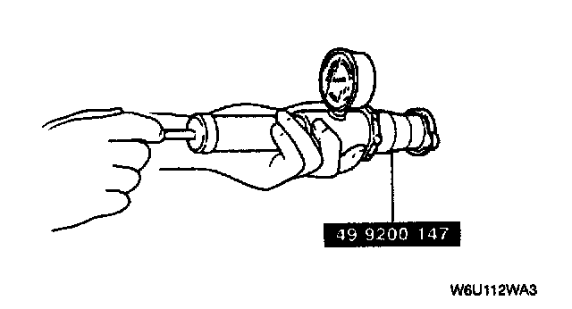

Radiator Cap: Testing and Inspection
RADIATOR CAP INSPECTION
1. Attach the radiator cap to a radiator cap tester with the Special Service Tool (SST). Apply pressure gradually.
2. Verify that the pressure becomes stable within the specification.
Pressure: 94 - 122 kPa (0.95 - 1.25 kgf/cm2, 13.5 - 17.7 psi)
3. If the pressure is held for 10 seconds, the radiator cap is normal.